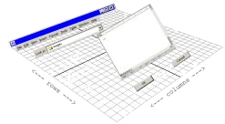

|  | The TableLayout Project http://www.clearthought.info/ |
The following are quotes from software engineers who have used TableLayout and provided unsolicited feedback. To protect the privacy of the individuals, their email address and names are not given. For brevity, some quotes represents only part of a letter.
The opinions given here do not represent endorsement from any company or organizations that own the domain names shown below. The opinions were expressed by individual software developers whose email addresses were from the domains shown.
| From: | yahoo.com | ||
| Great job on the layout! I love it. I am blown away how easy it is to use. It is by far much better than any of the other layouts. The only one I will use is CardLayout for a wizard component I wrote. But other than that, this is now my only layout I use! I think you should seriously consider submitting it to Sun to get included in the next version of Java, if not a 1.4 update, maybe 1.5. It is, as you showed, much easier to use than both GridLayout and GridBagLayout. | |||
| From: | infosim.com | ||
| ...this should most definitely be in the JDK - it blows away the competition (have you tried to actually use the SpringLayout). | |||
| From: | ota.fr.socgen.com | ||
| Your TableLayout saves us a lot of time and handles gracefully the most complex designs, great work! | |||
| From: | lane15.com | ||
| I really love your TableLayout. I think it's going to revolutionize layout in Java GUIs. | |||
| From: | wpafb.af.mil | ||
| Liked the article, it really opened my eyes to AWT. I've been so immersed in Swing, that I didn't realize AWT could have the flexibility demonstrated in your article. | |||
| From: | absolutesys.com | ||
|
I read your article "TableLayout - An Alternative to GridBagLayout" on the
Sun JFC site, and I think TableLayout is quite superb. I use Netbeans for most of my work, and I am now trying to find a Netbeans support module for TableLayout. |
|||
| From: | clarityconnect.com | ||
| I wanted to personally thank you for the excellent TableLayout. It is exactly in the sweet spot between simplicity and power. Before TableLayout I was layering panels in BorderLayouts like you wouldn't believe! I had to write the UIs in one sitting because I could never go back and make a change! I tried creating UIs with every release of JBuilder from latte to version 6. Every time I went back to SlickEdit (although I've now switched to IntelliJ Idea) And I tried coding GridBagLayout by hand. That didn't even come out looking like the the Java I know. So, I just stayed away from writing UI code. Finally, with TableLayout, I can sculpt the UI as I go along. | |||
| From: | offset.demon.nl | ||
|
My compliments on your article about table layout and the code, found on
the Swing connection. A longtime 'command line' DOS programmer, I am trying to teach myself Java which I admire greatly but find GUI coding terrible. I quickly found out how to use this layout and have already used it in an in house application. I hope the Swing team will integrate this in their next offering. No reply required -- just thanks for your work. |
|||
| From: | shef.ac.uk | ||
| Just wanted to thank you for your article on TSC on the new TableLayout, it was exactly what I needed for a project I'm doing (sports scorer for Cricket). Great article | |||
| From: | askasicomp.com | ||
| I have been sidetracked for a while, but I finally took the time to read your article: TableLayout - An Alternative to GridBagLayout A Simple and Powerful Layout Manager I just have to make more time to play with stuff like this. This is way cool. Although I'm not qualified to say this, I am way impressed. Keep up the great work!!! | |||
| From: | pacbell.net | ||
|
I just can't resist to thank you for your excellent job on the TableLayout.
It is the best layout to date. Lots of people literally suffering working
with Sun's layouts, these layouts are a real pain. Your layout is a joy to work with! |
|||
| From: | aciworldwide.com | ||
| I read your article about your TableLayout manager that is posted on the Sun web site. I want to tell you that I think your layout manager is the easiest to use of all of the layout manager classes that I have implemented. I have primarily been working with the GridBagLayout manager for all of my Swing projects. It was very frustrating trying to get the UIs to size without any of the pixel problems that you point out in your article. Thanks again for such a great layout manager class. | |||
| From: | mac.com | ||
| TableLayout is fantastic! Are you planning any enhancements? | |||
| From: | mueller.ca | ||
| TableLayout is very useful and makes it a lot easier to develop Swing applications. In fact, the existing knowledge on spreadsheets and HTML tables enables developers to create frames and dialogs much more efficiently. Thanks for this excellent invention! | |||
| From: | powervision.com | ||
| I wanted to say thanks for the layout! As many of the other quotes from your web-site attest, it's a great contribution. I don't abhor laying out my GUI screens anymore, I just sketch them on paper and lay them out in seconds. | |||
| From: | rlx.com | ||
| TableLayout is a terrific layout manager. Thank you for the excellent work. | |||
| From: | JGoodies.com | ||
| You have significantly improved the layout situation in Swing applications. It is not only that you've inspired me, but I have used your TableLayout in Swing courses and have found that its mental model is what developers can understand quickly. | |||